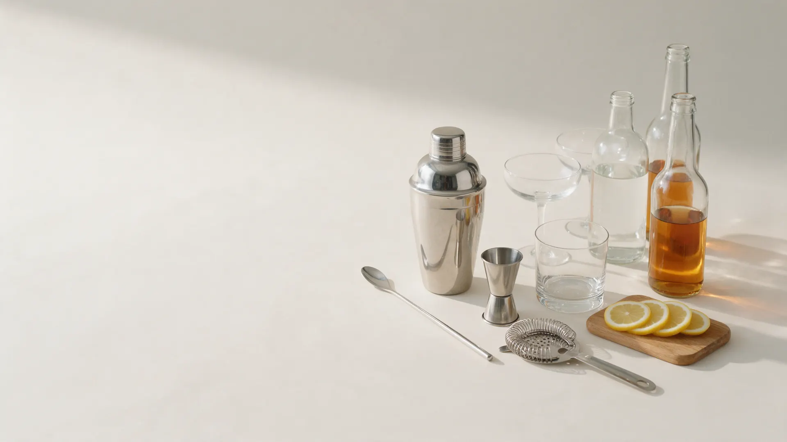
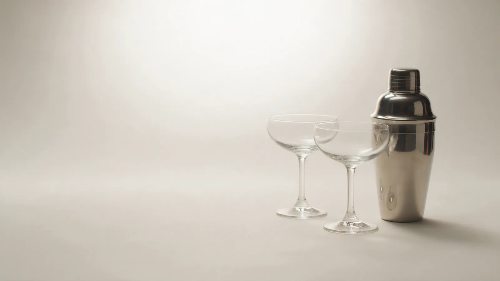
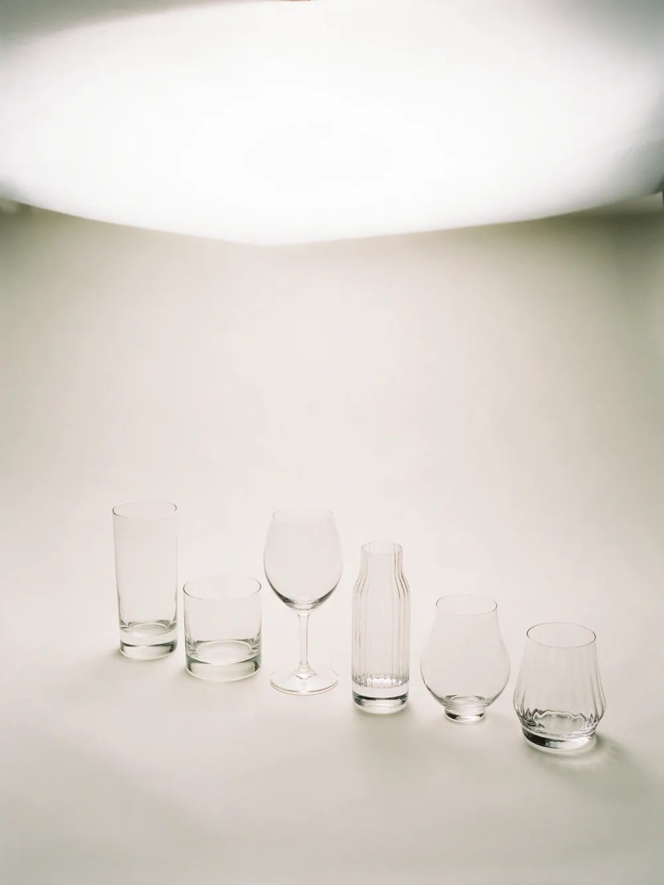
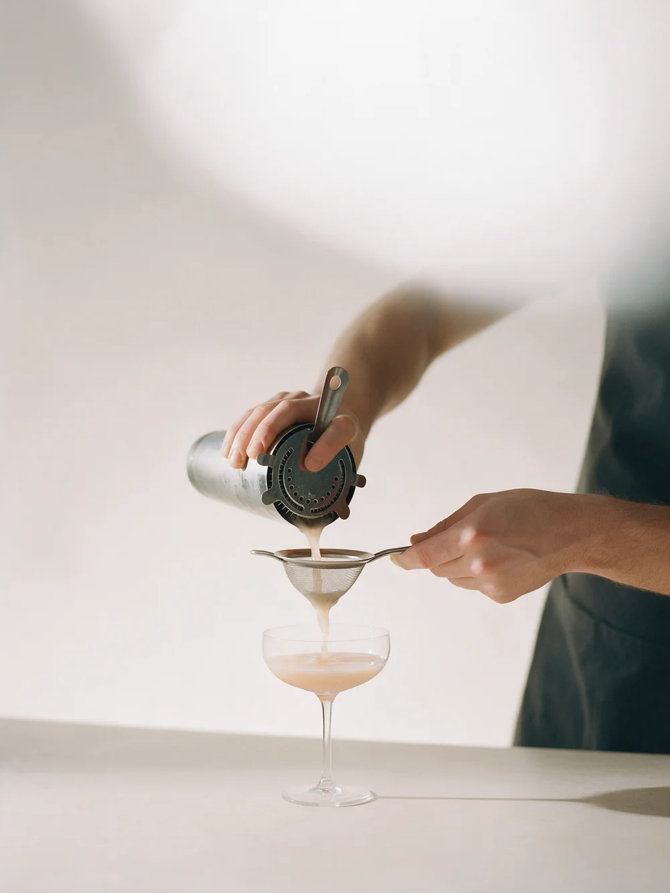

Барменская школа
Курсы бармена в Твери: от первого коктейля до смены за стойкой
Смотрите программу по этапам, формат и цену – и решаете, записываться ли. Без сюрпризов после оплаты.
Курс – 6 недель, 24 000 ₽. Ближайший набор – 13 октября.
Почему бросают на полпути
Без программы курс – это «показали пару коктейлей»
Через пару занятий непонятно, чему уже научились и что дальше. Поэтому порядок такой: программа по этапам, практика и итог каждого этапа.
Три задачи, с которыми приходят
Программа зависит от цели. На первом занятии выясняем, какая из трёх ваша, и от неё строим курс.
- С нуляНовая профессия или подработка: устройство бара, инвентарь и первые коктейли.
- Для практиковУже работаете за стойкой: классика, скорость и сервис на новом уровне.
- Для заведенияОбучение персонала: одна программа и единые стандарты для всей смены.
Программа по этапам, а не «покажем пару коктейлей»
Курс разбит на четыре этапа: что разбираем на занятиях и что отрабатываем сами. Вот тетрадь бармена, страница за страницей.
- Этап 1Основы бара
- Этап 2Классические коктейли
- Этап 3Скорость и сервис
- Этап 4Итоговая смена
После каждого этапа – итог: что получается, что ещё отработать.
Как проходит занятие
Каждое занятие по одной схеме: теория коротко, практика – большую часть времени.
Записаться на курс
Начало
Повтор прошлой темы
Вспоминаем рецепты и технику прошлого занятия. Ошибки разбираем сразу.
Ученик: видит, что уже получается.
Новая тема
Одна техника
Показ, рецепт, разбор деталей. Одна техника за занятие, не пять сразу.
Ученик: понимает, зачем каждое движение.
Практика
Сам за стойкой
Ученик готовит сам, преподаватель подсказывает, а не делает за него.
Ученик: больше делает, чем смотрит.
Итог
Разбор и задание
Что получилось, что отработать к следующему занятию.
Ученик: знает, над чем работать дальше.
Цена курса – до оплаты
Программа, длительность и стоимость каждого курса известны заранее.
- Где – ул. Учебная, 1
- Оплата – перед стартом, можно в два платежа
- Расписание – вт и чт, 18:30-21:30

Курс бармена с нуля
6 недель24 000 ₽Для новой профессии или подработки: от устройства бара до итоговой смены.
Курс для практиков
3 недели16 000 ₽Для тех, кто уже за стойкой: классика, скорость, сервис.
Обучение персонала
2 недели12 000 ₽Для баров и ресторанов: одна программа для всей смены.

Сначала спрашиваю, зачем вам бар
Работа, подработка или для себя – от этого зависит программа. Поэтому первое занятие начинается с цели.
Одна техника за занятие. Не пять. Техника закрыта, когда ученик делает её сам, без подсказки.
После каждого этапа – разбор: что получается, что ещё отработать. Без «всё хорошо».
Запишитесь на курс
Напишите, какая у вас цель – работа, подработка или обучение персонала: подскажем подходящий курс, ближайший набор и цену.